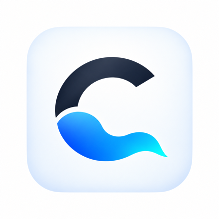

Application Android
Politique de confidentialité
Version en vigueur au 25 septembre 2026
Cloudiste fonctionne principalement en local sur ton appareil. L’application ne crée aucun compte Cloudiste, ne vend aucune donnée et n’envoie aucune donnée personnelle à un serveur exploité par son développeur.
Application et responsable
Cette politique concerne l’application Android Cloudiste, identifiée par
fr.cloudiste.launcher. Elle est développée par Rodolphe CHOUTEAU, créateur de la chaîne
@Cloudgamingfrance.
Contact relatif à la confidentialité : rodolphe.c.pro [at] gmail [dot] com.
Données utilisées localement
Cloudiste traite sur l’appareil les informations nécessaires à ses fonctions :
- les préférences, la langue, le thème, le mode d’affichage et l’organisation de l’accueil ;
- les services, dossiers et raccourcis ajoutés par l’utilisateur ;
- la liste et les informations techniques des applications Android pouvant être lancées ;
- les images, GIF et vidéos choisis pour personnaliser l’interface ;
- le modèle de l’appareil, la version Android, WebView et les manettes détectées pour le diagnostic ;
- les dernières erreurs techniques rendues accessibles par Android ;
- le dernier résultat du diagnostic réseau, notamment la latence, la gigue, les pertes, les débits, le type de connexion et, en Wi-Fi, la bande 2,4, 5 ou 6 GHz et sa fréquence ;
- sur les consoles à deux écrans, le nom du service lancé, la durée de la partie en cours et de la dernière partie, ainsi que le niveau de batterie, la température et la force du signal Wi-Fi affichés sur l’écran du bas. Le nom du réseau Wi-Fi n’est pas lu.
Ces informations ne sont pas envoyées automatiquement au développeur de Cloudiste.
Diagnostic réseau et Cloudflare
Le diagnostic réseau est facultatif et démarre uniquement à la demande de l’utilisateur. Il échange des données techniques de test avec l’infrastructure de mesure de Cloudflare au moyen d’une connexion HTTPS. Le test rapide utilise une quantité minime de données. Le test complet utilise environ 10 Mo et fait l’objet d’une confirmation avant son lancement.
Cloudiste n’ajoute à ces échanges aucun compte, identifiant matériel, nom de réseau Wi-Fi, mot de passe, identifiant de service cloud gaming ou contenu personnel. Comme pour toute communication Internet, Cloudflare peut recevoir les métadonnées techniques nécessaires à la connexion, notamment l’adresse IP, conformément à sa propre politique de confidentialité.
Sur les consoles à deux écrans, l’option « Ping Internet pendant le jeu » est désactivée par défaut. Si tu
l’actives, Cloudiste envoie pendant tes parties une requête minimale toutes les 10 secondes au serveur de
mesure de Cloudflare (speed.cloudflare.com) pour afficher le temps de réponse de ta connexion.
Aucune donnée personnelle, aucun identifiant et aucune information sur le jeu ne sont transmis. Les mesures
s’arrêtent à la fin de la partie ou dès que l’option est désactivée.
Vérification des mises à jour et GitHub
Une version de Cloudiste installée depuis Google Play utilise exclusivement Google Play pour ses mises à jour et n’interroge pas GitHub. Une installation directe ou gérée par Obtainium peut consulter l’API publique de GitHub afin de connaître la dernière release disponible. Le résultat est conservé localement pendant six heures.
Cette requête HTTPS transmet à GitHub les métadonnées techniques ordinaires nécessaires à la connexion, notamment l’adresse IP, ainsi qu’un User-Agent indiquant la version de Cloudiste. Elle ne contient ni compte Cloudiste, ni liste d’applications, ni réglages, ni identifiant de service cloud gaming.
Rapport de diagnostic et partage volontaire
Le rapport bêta peut contenir la version de Cloudiste, le modèle de l’appareil, Android, WebView, les manettes détectées, l’état des services, le launcher sélectionné, le dernier diagnostic réseau et les dernières erreurs techniques disponibles. Il ne contient pas de mot de passe, de cookie, d’historique de navigation, de nom de réseau Wi-Fi ou d’identifiant de compte.
Le rapport reste sur l’appareil. Il n’est transmis que si l’utilisateur touche explicitement Partager, vérifie son contenu et choisit lui-même une application destinataire. Le traitement ultérieur dépend alors de la politique de cette application et du destinataire choisi.
Services, applications et navigateur externe
Cloudiste lance les applications tierces installées et ouvre les sites de cloud gaming dans le navigateur Android externe. Cloudiste n’affiche pas leurs pages de connexion, ne voit pas les identifiants saisis et ne gère pas leurs cookies. Les services, navigateurs, boutiques d’applications et applications ouverts appliquent leurs propres politiques de confidentialité.
Conservation et suppression
Les réglages, personnalisations et résultats de diagnostic restent dans l’espace privé de Cloudiste jusqu’à leur réinitialisation ou la désinstallation de l’application. Les sauvegardes sont créées uniquement à la demande de l’utilisateur et restent à l’emplacement qu’il choisit. Leur suppression dépend ensuite de cet emplacement ou de l’application de stockage utilisée.
Toutes les données locales de Cloudiste peuvent être supprimées avec la fonction de réinitialisation, depuis les réglages Android de l’application ou en désinstallant Cloudiste. Aucun compte distant n’a besoin d’être supprimé, car Cloudiste ne crée pas de compte utilisateur.
Sécurité
Les préférences et médias internes sont conservés dans l’espace privé attribué à l’application par Android. Les communications nécessaires au diagnostic réseau utilisent HTTPS. L’utilisateur contrôle explicitement la création d’une sauvegarde et le partage d’un rapport.
Évolution de cette politique
Cette page sera mise à jour avant la diffusion d’une fonction modifiant l’accès, l’utilisation, la conservation ou le partage des données. La date d’entrée en vigueur affichée en haut permet d’identifier la version actuelle.